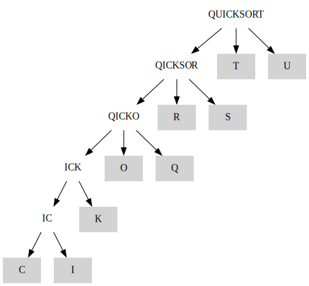
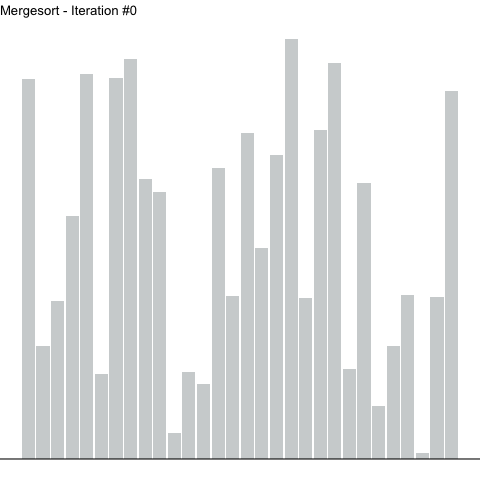

Quicksort

Figure 1: Using quicksort to sort the letters of the word “QUICKSORT”. Pivot items are underlined.
Description
Quicksort, like mergesort, is another divide and conquer sorting technique. The general strategy of quicksort is as follows:
- Given an array, choose an element to act as the “pivot” which will be used to partition the array.
- Separate the array in two, forming a group of elements smaller than the pivot and a group larger than the pivot.
- Recursively partition these two groups in the same manner as the prior steps.
- Combine all the partitions (no work is required as they are all sorted).
The graph above shows how quicksort would sort the letters of the word “QUICKSORT”. Note that when partitioning has completed (only 1 letter arrays remain), the highlighted leaf nodes end up in sorted order when read left-to-right. This illustrates how the partitioning routine of quicksort is responsible for sorting, whereas the final merge step is trivial.
Below, a numerical array is sorted with quicksort. Highlighted elements are undergoing sorting, with the pivot element highlighted a different color. A horizontal line represents the value (height) of the pivot. Note how on each iteration, values to the left of the pivot sit below the line, whereas values to the right sit above. The elements to the left of the pivot are not themselves sorted, but they are all less than the pivot. The reverse is true for those elements on the right.

Figure 2: Using quicksort to sort a numerical array. Highlighted elements are being sorted, with the height of the pivot represented as a horizontal line.
Implementation
quick_sort facilitates the recursive partitioning, while swap is a helper to cleanly move elements around.
def quick_sort(array, low_idx, high_idx): """ Sort an array using the quick sort algorithm. >>> quick_sort([6, 7, 13, 1, 12, 8, 14, 2], 0, 7) [1, 2, 6, 7, 8, 12, 13, 14] """ if low_idx < high_idx: _, pivot_idx = partition(array, low_idx, high_idx) quick_sort(array, low_idx, pivot_idx - 1) quick_sort(array, pivot_idx + 1, high_idx) return array def swap(array, first_idx, second_idx): """ Swap two elements in an array. >>> swap([13, 31], 0, 1) [31, 13] """ array[first_idx], array[second_idx] = array[second_idx], array[first_idx] return array
As mentioned above, the partitioning of the array does the actual sorting work, thus all the interesting details are in partition.
This function selects the last element of the given (sub-)array as the pivot and traverses the rest of the (sub-)array, comparing the pivot to each value.
If an encountered value is less than the pivot, it is swapped to the end of the left side (i.e. values less than the pivot) of the values being partitioned.
Two indices are involved, one to iterate over the array, and the other to keep track of the last value encountered that is less than the pivot, used in swapping.
def partition(array, low_idx, high_idx): """ Partition array into arrays of items smaller and larger than pivot. >>> partition([2, 8, 7, 1, 3, 5, 6, 4], 0, 7) ([2, 1, 3, 4, 7, 5, 6, 8], 3) """ i = low_idx - 1 pivot = array[high_idx] for j in range(low_idx, high_idx): if array[j] <= pivot: i += 1 swap(array, i, j) swap(array, i + 1, high_idx) pivot_idx = i + 1 return array, pivot_idx
Complexity
Choosing a partition has been glossed over thus far, but plays a central role in the performance of quicksort. As presented here, the pivot is always assumed to be the last element of the array under investigation. There exist many variations on this, including assuming the first, middle, or taking a random element as a pivot.
Worst case performance occurs when the chosen pivot results in one empty and one size \((n - 1)\) array after partitioning. This would result in \(O(n^2)\) behavior. Conversely, the best case is when partitioning results in two balanced arrays yielding \(O(n \ln{n})\) performance. In reality, the average expected performance tends more toward the best case.
Tracking Sorting Progression
The following class is used to track the progression of sorting which can be used to visualize how sorting evolves.
import pandas as pd class QuickSorter(object): STATUS_NONE = "none" STATUS_SORTING = "sorting" STATUS_PIVOT = "pivot" def __init__(self, data): self._data = data self._snapshots = [] self._sorted = False for idx, value in enumerate(self._data): self._snapshots.append( { "position": idx, "value": value, "iteration": 0, "status": QuickSorter.STATUS_NONE, "pivot": 0 } ) self._iteration_count = 1 @property def data(self): return self._data @data.setter def data(self, new_data): """ Ensures a "sorted" state is invalidated on data change. """ self._data = new_data self.sorted = False @property def snapshots(self): return pd.DataFrame.from_records(self._snapshots) def quick_sort(self, low_idx, high_idx): if low_idx < high_idx: _, pivot_idx = self.partition(low_idx, high_idx) self._snapshot(low_idx, high_idx, pivot_idx) self.quick_sort(low_idx, pivot_idx - 1) self.quick_sort(pivot_idx + 1, high_idx) def partition(self, low_idx, high_idx): i = low_idx - 1 pivot = self.data[high_idx] for j in range(low_idx, high_idx): if self.data[j] <= pivot: i += 1 swap(self.data, i, j) swap(self.data, i + 1, high_idx) pivot_idx = i + 1 return self.data, pivot_idx def _snapshot(self, low_idx, high_idx, pivot_idx): """ Copy self.data, indicating if each element is currently being sorted. """ for idx, value in enumerate(self._data): self._snapshots.append( { "position": idx, "value": value, "iteration": self._iteration_count, "status": QuickSorter.STATUS_PIVOT if idx == pivot_idx else QuickSorter.STATUS_SORTING if idx in range(low_idx, high_idx + 1) else QuickSorter.STATUS_NONE, "pivot": self.data[pivot_idx] } ) self._iteration_count += 1